Calendar Key
▼
Full Board Meeting
Committee Meeting
Community Event
 Prospect Park
Prospect Park Old Stone House
Old Stone House Gowanus Dredgers
Gowanus Dredgers Van Alen Institute
Van Alen InstituteBRIC Celebrate Brooklyn
BRIC Arts Media
 Brooklyn Conservatory of Music
Brooklyn Conservatory of Music Powerhouse Arts
Powerhouse Arts Arts Gowanus
Arts Gowanus Gowanus Canal Conservancy
Gowanus Canal Conservancy Park Slope Open Streets
Park Slope Open Streets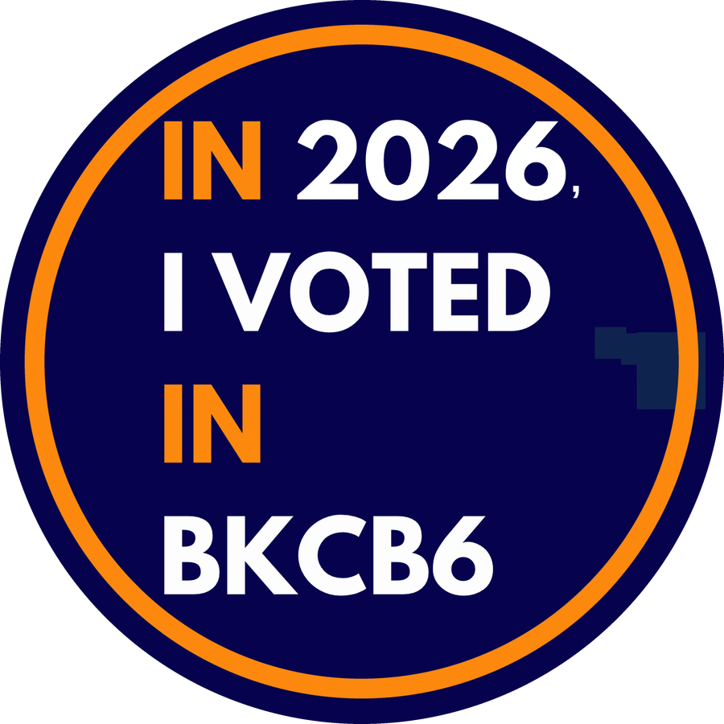
NYC Votes Principles GI Coffee House
Principles GI Coffee HouseArtichoke Dance Company
 Red Hook Art Project
Red Hook Art Project Park Slope 5th Ave BID
Park Slope 5th Ave BIDBark Slope
 Brooklyn Public Library
Brooklyn Public Library 78th Precinct Community Council
78th Precinct Community Council 76th Precinct Community Council
76th Precinct Community Council Cobble Hill Association
Cobble Hill Association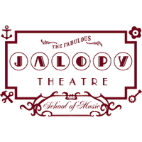
Jalopy Theatre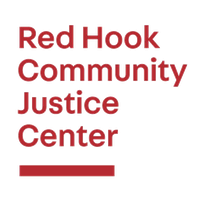
Red Hook Community Justice Center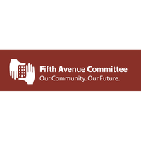
Fifth Avenue Committee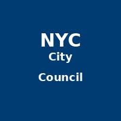
NYC City CouncilNYC City Planning
Landmarks Preservation Commission
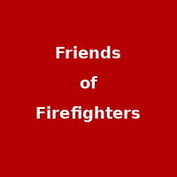
Friends of Firefighters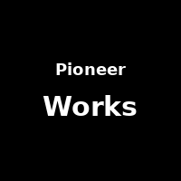
Pioneer Works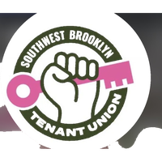
SW Brooklyn Tenant UnionCM Alexa Aviles (CD38)
Senator Andrew Gounardes (SD26)
Brooklyn Borough President
Why Not Art
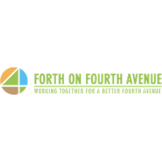
Forth on Fourth Avenue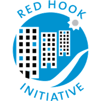
Red Hook Initiative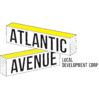
Atlantic Avenue LDC NYC Parks
NYC Parks 6/15 Green Community Garden
6/15 Green Community Garden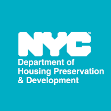
NYC Housing Preservation & DevelopmentNYC Rent Guidelines Board
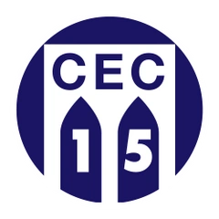
CEC District 15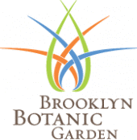
Brooklyn Botanic Garden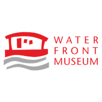
Waterfront Museum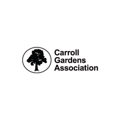
Carroll Gardens Association Brooklyn Bridge Park
Brooklyn Bridge ParkULURP / Land Use
Alt Side / City Notice
NYC Schools
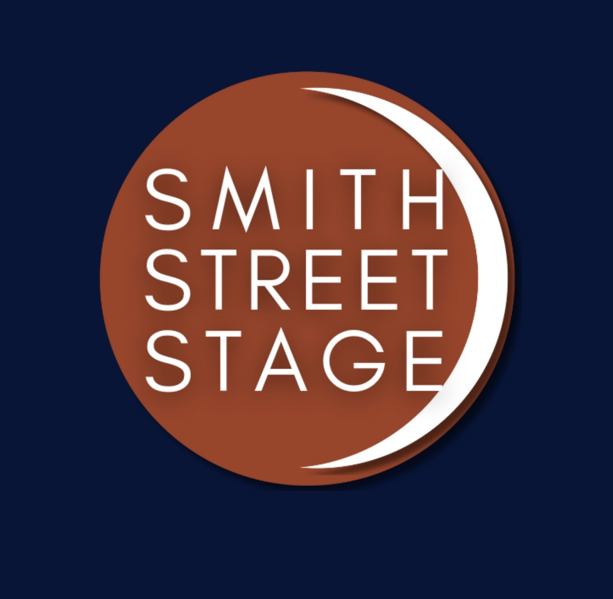
Smith Street StageRed Hook Business Alliance
Nitehawk Cinema
Park Slope Farmers Market
Brooklyn Pride
DSNY
NYCHA in Your Neighborhood
Red Hook Lobster Pound
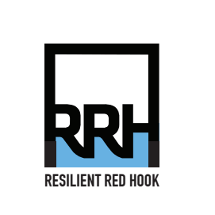
Resilient Red Hook